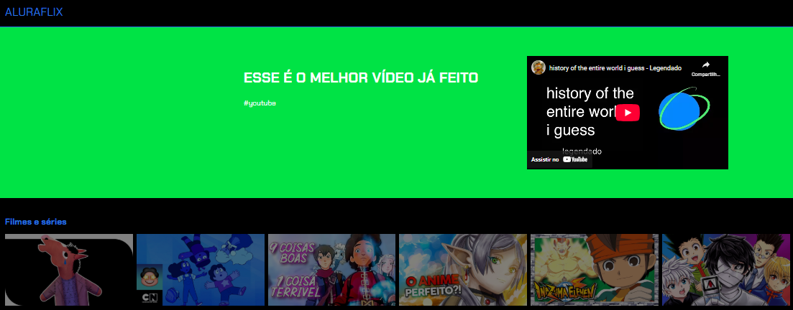
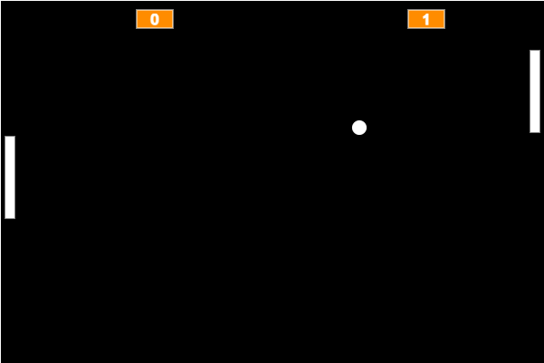
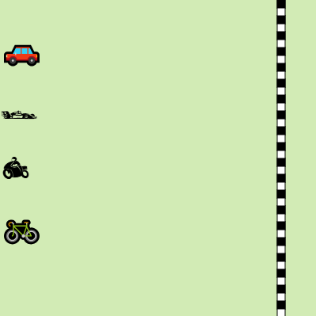

Meus projetos

Portifolio de Vídeos: Uma Webpage Personalizada
Este projeto é uma página web que apresenta uma lista dos meus vídeos favoritos. A página é estilizada com CSS para uma visualização agradável e usa fontes externas do Google Fonts.

Jogo de Pong utilizando JavaScript
Este projeto é um jogo interativo baseado em navegador onde o jogador controla uma raquete virtual em um ping-pong digital, inspirado no sucesso de 1972.

Jogo de Corrida utilizando JavaScript
Este projeto JavaScript cria um jogo de corrida para 4 jogadores utilizando apenas um botão para cada.